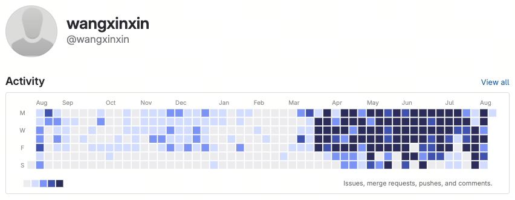

SensePedia Octo Agent 平台项目回顾
从今年3月初开始，我们团队启动了一项实验：用AI Native方式构建一款可商业化交付的Agent平台产品，并交付给我们亚太区域的商业伙伴，以Agentic方式重构他们的业务流。这个产品就是SensePedia Octo，其中没有一行代码是人工编写的。本文会介绍我们从零开始打造一款全新产品的过程中，所能学到的经验教训。
SensePedia Octo各项数据统计

下面是设计文档数量，代码行数，提交记录数从不同维度的统计数据图表。AI Native给人的第一感觉，一个人可以产出原先一个团队的工作量。
⏰ 按小时的提交分布
0–23 点，按 Git committer 本地时间统计
📅 按月份的提交分布
2026-03 至 2026-08，按 Git committer 日期统计；2026-08 仅到快照日为止，尚未走完整月
👥 按作者的提交分布
按 author name 聚合；同名不同邮箱已合并
📚 设计文档分布
设计文档按 Git 已追踪文件的扩展名统计
🧱 按语言的代码行数
cloc 2.10，统计 Git 已追踪文件；工程代码共 1，206，643 行，已排除 Markdown、HTML 与 Text 文档内容
统计快照：hk_customs @ efad0fd2c676（2026-08-07 23:19 +08:00）。提交按 committer 日期分桶，人员按 author name 聚合；文档统计包含全部 Git 已追踪的 .md、.html / .htm 文件。
AI Native开发概述
传统模式下， 人是架构设计和代码开发的主体，开发团队由一名组长和多名组员构成，沟通协调的方式是声波互联协议--也就是组会；
AI 原生模式下，人是意图、约束与质量的主体，AI 是高吞吐的执行主体，开发团队由一名人类和多个Agent构成，沟通协议是 markdown 和 html 文档。
人的核心能力从「经验丰富」「编码快」转向把问题定义清楚、把约束表达清楚、把结果验证清楚。
系统迭代进入高通量时代，快速开发商业可用的大规模稳定系统的瓶颈转移到了一种稀缺的资源：人类的时间和注意力。
编码 Agent 的价值与边界
编码 Agent 的主要价值，不只是「编码更快」，而是能降低需求澄清、知识传递、设计草拟和编码的成本。它能放大研发效率，但放大效果取决于驾驭 Agent 的人在系统设计、技术掌握、业务 know how 的知识沉淀、需求稳定性、上下文可获得性、QA体系和团队使用方式。
🗣️需求确认大幅提效
可用快速原型、可运行 demo 或交互稿对齐需求，减少抽象讨论带来的偏差。对外展示时必须标注 demo 的验证范围，避免把探索性原型误认为可交付产品。
📥规模化获取显式上下文
Agent 能从代码、文档、提交记录和测试里快速提取上下文，降低交接损耗。但它不会天然理解隐式业务知识;关键约定必须沉淀为文档、类型、测试或运行证据。
📐存量梳理 + 风险分层覆盖
Agent 适合梳理存量代码、补齐 spec、厘清模块职责。覆盖要求按风险分层:核心链路、权限、资金、数据安全、复杂状态机必须重点覆盖;低风险改动可轻量化。
⚡突破部分协作瓶颈
在需求相对清晰、模块边界明确、验证体系健全的项目里，Agent 可以减少「加人带来的沟通成本」。不承诺固定倍数;每个项目应以交付周期、缺陷率和返工率来评估收益。
对组织协作的影响
🎯重心转向价值确认
实现成本下降后，瓶颈更容易前移到「做对的事」。团队需要把更多精力放在业务价值、用户路径、风险边界和验收口径上。
🔗减少低价值同步
能由文档、代码、测试和 Agent 自动汇总解决的问题，不再依赖反复开会传话。高风险决策、资源冲突和跨团队承诺仍需明确责任人。
框架与模块设计
先对齐意图与边界，再让 AI 填充实现;接口与契约是 AI 协作的「公共语言」。
- 需求澄清(Brainstorm):动手前先和 AI 过一轮——目标、用户、约束、非目标、失败模式、可选方案与取舍。让 AI 主动反问、列出不确定点，而不是直接给方案。
- 设计文档:由人给出初始推动的想法，再由 AI 起草设计文档(目标 / 模块边界 / 接口 / 数据流 / 风险)，人 review 后定稿。需求、取舍和边界以设计文档为准;代码、测试和线上行为是实现事实源，变更时必须同步更新设计文档。
- 根目录文件/16
-
.coord/236
- approvals/1
- decisions/4
- tasks/**231
-
docs/647
- adr/2
- analysis/46
- api/1
- changelog/1
- ci/1
- design/405← 主要设计规格目录
- front/19
-
reports/65
- cyber-soca-system-busy-rca-2026-07-01.html
-
soca-e2e/64← 验收证据，非设计规格
-
2026-07-04/
- baseline/21
- afterfix-1/19
- afterfix-2/4
- afterfix-3/0（仅 JSON，非 MD/HTML）
- final/19
-
- runbooks/40
- superpowers/{plans，specs}/4
- skills/14
- services/12
- deploy/8
- tests/5
- agents/2
- stitch/2
- .octo/1
- diagrams/1
接口先行
先定义清晰的接口/契约/类型，AI 在明确契约下实现质量显著更高，也便于替换实现。
边界清晰、低耦合
模块可独立理解、独立测试。清晰的边界 = 可拆成多个并行子任务交给多 Agent。
可独立验证
每个单元都有「怎么算对」的判定标准，这是后续自动化验证与并行化的前提。
显式优于隐式
命名、目录约定、错误处理写清楚;AI 主要依赖可见上下文，隐式约定必须转成文档、类型、测试或示例。
AGENTS.md(技术栈、目录结构、需要遵守的开发规范、开发测试服务器的 ip/port 以及密钥、构建与测试命令)。这是给所有 AI 协作的「项目约定」，一次写好长期复用。
Coding
测试驱动 + 小步提交 + 风格对齐;复杂任务先出计划再动手。
2.1 标准节奏
2.2 关键做法
- 复杂任务先进 Plan 模式:让 AI 先给出实现计划(改哪些文件、什么顺序、风险点)，人确认后再执行，避免「一把梭」跑偏。
- 小 diff、勤提交:每个 commit/PR 对应一个可描述、可回滚的改动;便于 review 与定位回归。
- 风格对齐既有代码:让新代码在命名、注释密度、惯用法上与周边一致，而不是 AI 自带的风格。
- 独立子任务并行化:互不依赖、无共享状态的多个任务，可派发多个子 Agent 并行;有依赖则串行，避免并行制造冲突。
- 人工守住高危操作:涉及发布、数据删除、改线上配置、对外发送等不可逆动作，AI 暂停、人确认。
2.3 并行 Agent 操作约束
- ✓先切任务边界:每个 Agent 只负责一个可验证子目标，明确可改文件范围和不可改区域。
- ✓隔离工作区:并行实现优先使用独立 branch/worktree，避免多个 Agent 同时改同一批文件。
- ✓集中合并:由人或主 Agent 统一合并，逐个跑测试和验证;不要把多个 Agent 的 diff 一次性混合提交。
- ✓保留证据链:每个子任务交付时必须说明改动、测试命令、结果、已知风险和未覆盖范围。
Code Review
AI 先做一遍机器评审，人聚焦判断与上下文;对 AI 的反馈要核实，不要盲从。
3.1 人 + Agent 评审
| 层 | 谁来做 | 关注点 |
|---|---|---|
| 第一层 机器评审 | AI(自动化 review / 安全扫描 / 静态检查) | 常见 bug、空指针、边界、未处理错误、明显安全问题、风格一致性、与计划的偏离 |
| 第二层 人工评审 | 评审人 | 是否真正解决了问题、架构是否合理、可维护性、业务正确性、是否过拟合、AI 看不到的上下文与权衡 |
3.2 Agent交叉评审
| 角色 | 分工 | 要点 |
|---|---|---|
| 实现方 | 设计 + 编码 + 自测 | 产出方案与代码，先完成自查 |
| 评审方 (如 Codex) | 对抗式 review | 以「假设实现方错了」为前提找漏洞，重点盯 P0:正确性、边界、安全、架构缺陷 |
| 人 | 裁决收口 | 核实交叉评审暴露的问题是否成立，决定采纳/反驳 |
- 关键节点必交叉:设计方案、核心模块、高风险改动，定稿前过一遍「换一个 AI」。
- 双向都做:谁写的不重要，重要的是评审方与实现方不是同一个模型，避免共享盲点。
- P0 优先:让评审方先报「会导致严重后果」的问题，再谈风格与优化。
3.3 接收评审意见(对 AI 也对人)
对抗式验证小技巧:对一个可疑结论，派几个「专门挑刺」的视角去反驳它(正确性 / 安全 / 能否复现);多数都驳不倒，才算站得住。
Test
测试是 AI 时代的「安全绳」——它把「AI 说对了」变成「机器证明对了」。
4.1 测试驱动开发(TDD)红-绿-重构
测试先行的额外价值:它把模糊需求逼成可执行的规格。一旦测试写清楚，AI 实现的命中率显著提升，也天然防止「实现跑偏却自称完成」。
4.2 让 AI 增强测试，而不是替代判断
- 让 AI 主动列边界与异常用例(空值、超长、并发、越权、网络失败)，人补业务关键路径。
- 关注关键路径与高风险分支是否真被测到。
- 当修改核心模块后可以对系统全量跑一次回归测试，务必保持所有测试全部通过，不通过的测试需要看是测试用例过时了还是确实有问题。
Verification
单测和集成测试过 ≠ 真的好用。在「真实环境/真实路径」上验证，并以证据收口。
配置校验
工具链与上下文工程
把「怎么让 AI 干得好」工程化:规范、记忆、技能、并行编排。
6.1 工具链沉淀
📜项目约定
AGENTS.md:技术栈、结构、命名、禁忌、构建与测试命令、安全边界——所有 AI 协作的统一前提。
🧠跨会话记忆
把踩过的坑、团队约定、长期上下文沉淀为可复用记忆。
🛠️技能/SOP 化
把高频流程(评审、调试、发布前检查)固化成可调用的标准流程，降低发挥波动。
/Users/user1/Desktop/keynotes.md)，再在每个项目的 AGENTS.md 里加一句引用，比如:『请阅读并在执行任务过程中遵守 /Users/user1/Desktop/keynotes.md』。这样同一套经验和约定就能自动应用到所有项目，不必在每个仓库里重复维护；更新一处，处处生效。
我们仍在探索的内容
7.1 如何建立及时有效的自动化系统测试反馈回路
得到及时、准确的反馈，才能加速系统迭代。
7.2 当我们有七八百个配置项的时候，如何确保每次部署都进行了正确的配置
需要将配置定义、环境差异、部署前检查与实际生效结果纳入可追溯的自动化校验闭环。